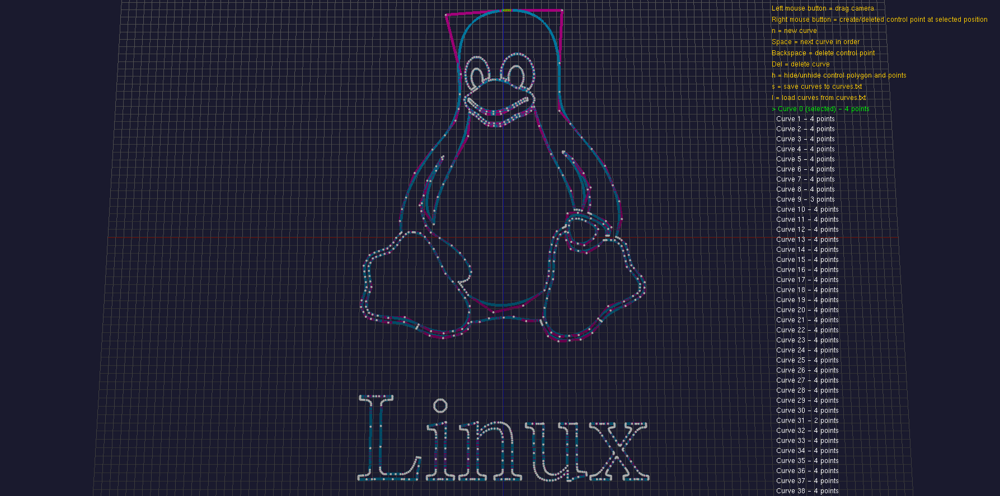
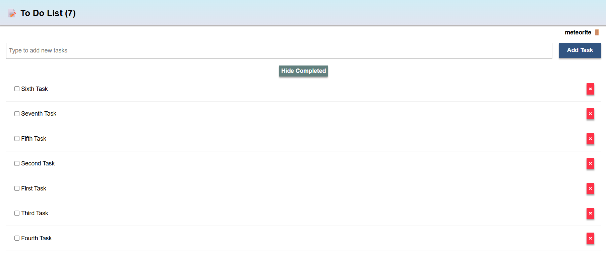
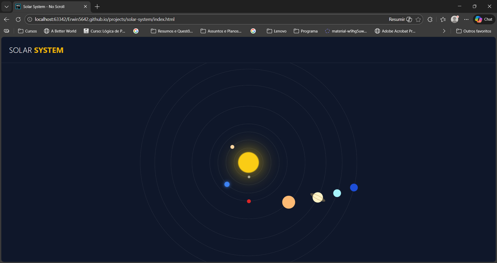
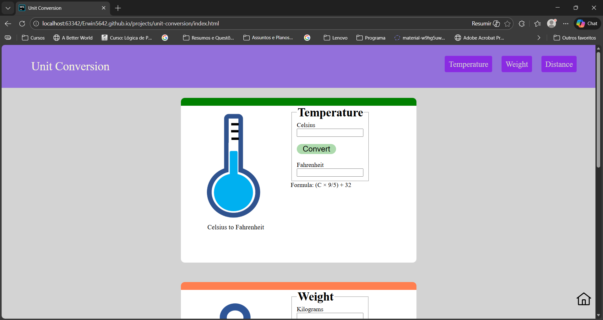

I model problems, validate ideas with simulation, and implement efficient, reproducible systems that scale. My interests are distributed systems, full-stack development, complex systems, data science, machine learning, scientific computing and virtual environments with intelligent agents.
I’m João Vitor — a software engineer and AI & VR researcher. I am an undergraduate at Universidade Estadual de Mato Grosso do Sul, where I develop research on embodied AI agents in virtual reality pedagogical environments.
My work focuses on building models and simulations to understand and solve real-world problems. I study complex systems, emergence, machine learning and distributed systems, and I translate these ideas into working prototypes and engineered systems.
Whether building real-time reactive web applications with JavaScript, Meteor, MongoDB, React or high-performance simulations in C++, Python, Julia, or C#, I prioritize architectural clarity, numerical correctness, and reproducible experimentation.
High-performance systems and architectural patterns where correctness and efficiency are non-negotiable.
Experimental research and numerical modeling focused on agent behavior and automated logic.
The environment and tooling required to build, deploy, and reproduce complex software architectures.

Interactive 3D Bézier curve simulator written in C++ and OpenGL. Built to study parametrization, numerical stability, and interactive geometry tooling.

Realtime task application exploring client-server sync and reactive UX patterns using Meteor and React.

A spatial animation showing orbital relationships — an exercise in representation and animation timing.

Lightweight web tool demonstrating clear UI patterns and structured client-side logic.
More work on GitHub.